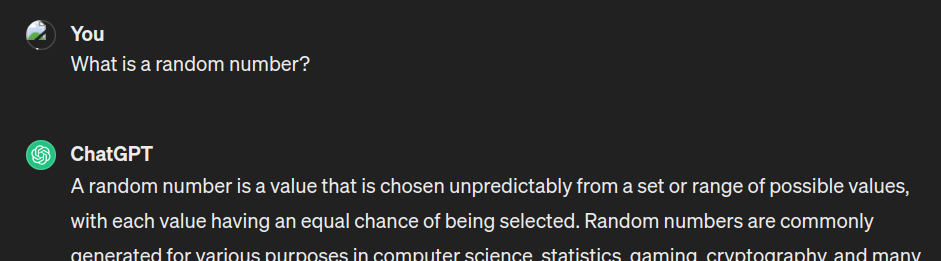

<section class="title-slide-lol"> ## Introduction to AI Ethics Gabriele Graffieti ---- IEEE student branch seminar <!-- .element: class="smaller grey italic" --> March 19, 2024 <!-- .element: class="smaller grey italic" --> </section> --- ## Who I am <div class="two-c-container" data-markdown> <div class="two-c-col-l"> <img src="./img/mine.jpg" width="90%"> </div> <div class="two-c-col-r" data-markdown> - Algorithm Engineer @ [Ambrella](https://www.ambarella.com) - Deep Learning & Computer Vision - Head of AI research @ [AI for People](https://www.aiforpeople.org) - Past researche \& PhD Student @ [Unibo](https://www.unibo.it/en/homepage) - Main research interests: Continual Learning, GenAI and Ethics </div> </div> --- <section data-background-iframe="https://www.ambarella.com" data-background-interactive> </section> --- ### Ambarella - Vislab - Research division of Ambarella on self-driving cars - 80+ people only in Parma <!-- .element: class="fragment" data-fragment-index="1" --> - ~1,000 worldwide (US, TW, IT, CH, DE, ...) <!-- .element: class="fragment" data-fragment-index="2" --> - On self-driving cars, our competitors are Tesla, Wayve, Waymo, Uber, etc <!-- .element: class="fragment" data-fragment-index="3" --> --- ### Ambarella - Vislab - 1998 1,000 miles (2,000+ km) on Italian highways with autonomous steering <!-- .element: class="fragment" data-fragment-index="1" --> - 2005-2007 DARPA grand urban challenge, 100% autonomous <!-- .element: class="fragment" data-fragment-index="2" --> - 2010 VIAC: 15k+ km autonomous driving (Parma-Beijing) <!-- .element: class="fragment" data-fragment-index="3" --> - 2013 PROUD: 13km in Parma fully autonomous (L4) <!-- .element: class="fragment" data-fragment-index="4" --> - 2015: Acquisition by Ambarella <!-- .element: class="fragment" data-fragment-index="5" --> - 2020: Full autonomous driving demo @ CES 2020 Las Vegas <!-- .element: class="fragment" data-fragment-index="6" --> - 2022-onwards: autonomous driving L4 in all environment with a single low power chip (no GPU, no high end CPU) <!-- .element: class="fragment" data-fragment-index="7" --> --- <section> <iframe width="1120" height="630" src="https://www.youtube.com/embed/x1glAcRP1TM?t=28" VQ=hd1080 frameborder="0" allow="accelerometer; autoplay; encrypted-media; gyroscope; picture-in-picture" allowfullscreen></iframe> </section> --- ### Ambarella - Vislab - What we do - State-of-the-art research on autonomous driving <!-- .element: class="fragment" data-fragment-index="1" --> - Only company in Italy (and one of the very few in Europe) to be allowed to test and drive in any road, at any time, with any traffic condition <!-- .element: class="fragment" data-fragment-index="2" --> - Both DL-based and classical approach to vehicle control, sensing, vision <!-- .element: class="fragment" data-fragment-index="3" --> - Sensing only based on cameras (1 stereo, 5 mono) + radars <!-- .element: class="fragment" data-fragment-index="4" --> --- ### Ambarella - Vislab - What we offer - A unique international research environment in Italy <!-- .element: class="fragment" data-fragment-index="1" --> - Ideas → development → deployment in T=0 <!-- .element: class="fragment" data-fragment-index="2" --> - Both industrial & academic research <!-- .element: class="fragment" data-fragment-index="3" --> - (Very) competitive salary & lot of benefits <!-- .element: class="fragment" data-fragment-index="4" --> - What we want <!-- .element: class="fragment" data-fragment-index="5" --> - You! <!-- .element: class="fragment" data-fragment-index="6" --> - Opening for thesis, PhD, jobs! <!-- .element: class="fragment" data-fragment-index="7" --> --- ## Why AI ethics? <img src="https://github.com/manuelperuzzi/evolutionary-cars/blob/master/examples/evo-cars_track03.gif?raw=true" height="500"> <!-- .element: class="fragment" data-fragment-index="1" --> [https://github.com/ggraffieti/evolutionary-cars](https://github.com/ggraffieti/evolutionary-cars) <!-- .element: class="fragment smaller" data-fragment-index="1" --> --- ## Why AI ethics? <!-- .element: class="fragment fade-out long-transition" data-fragment-index="1" --> <div class="r-stack"> <a href="" target="_blank">Demo!</a> </div> --- ## But that was just an example right? <img src="./img/medical_care.png" height="300"> <!-- .element: class="fragment" data-fragment-index="1" --> <p class="fragment" data-fragment-index="1">Hint: <span class="fragment custom blur">think about how US healthcare works.</span></p> --- ## But that was just an example right? <img src="./img/amazon_women.png" height="300"> <p>Hint: <span class="fragment custom blur">think about gender representation inside tech jobs.</span></p> --- ## Well, we can try to fix this right? ### How? <!-- .element: class="fragment" data-fragment-index="1" --> --- ### First of all we need to detect the problem - How we tested the model? <!-- .element: class="fragment" data-fragment-index="1" --> - Did train/validation/test sets were collected from the same distribution of data? <!-- .element: class="fragment" data-fragment-index="2" --> - What metrics we used to evaluate the performance? <!-- .element: class="fragment" data-fragment-index="3" --> - What we mean by performance? <!-- .element: class="fragment" data-fragment-index="4" --> --- ### But if we remove all gender/race/unwanted information from the data? - The AI system can infer them from remaining information <!-- .element: class="fragment" data-fragment-index="1" --> - Gender from height/weight ratio <!-- .element: class="fragment" data-fragment-index="2" --> - Ethnicity from specific disorders <!-- .element: class="fragment" data-fragment-index="3" --> - Level of weath from geographical information <!-- .element: class="fragment" data-fragment-index="4" --> - ... <!-- .element: class="fragment" data-fragment-index="5" --> --- ### But models are really that powerful? #### Spoiler: yes <!-- .element: class="fragment" data-fragment-index="1" --> --- ### Let's make a test Question time: What is a randon number? Ok, now tell me a random integer between 1 and 10 <!-- .element: class="fragment" data-fragment-index="1" --> What the distribution of answers should look like? <!-- .element: class="fragment" data-fragment-index="2" --> --- <img src="./img/human_random.jpg" height="600px"> --- ### Now let's ask chatGPT  <br/> What if we ask chatGPT that many times? <!-- .element: class="fragment smaller" data-fragment-index="3" --> --- <div class="r-stack"> <img class="fragment fade-out" data-fragment-index="1" src="./img/random_gpt_paper.jpg" width="70%"> <div class="two-c-container"> <div class="two-c-col"> <img class="fragment fade-in" data-fragment-index="1" src="./img/random_gpt.jpeg"> </div> <div class="two-c-col"> <img class="fragment fade-in" data-fragment-index="2" src="./img/human_random.jpg"> </div> </div> </div> [Can LLMs Generate Random Numbers? Evaluating LLM Sampling in Controlled Domains](https://arxiv.org/abs/2403.00742) <!-- .element: class="fragment smaller fade-out" data-fragment-index="1" --> --- #### And even more covertly [Dialect prejudice predicts AI decisions about people's character, employability, and criminality](https://arxiv.org/abs/2403.00742) <!-- .element: class="smaller" --> --- ### The rise of fundational models --- ### Do you trust who train LLM? --- ### Human vs AI --- ### Try not to become a no man --- ### Politics of AI --- ### What we can do?